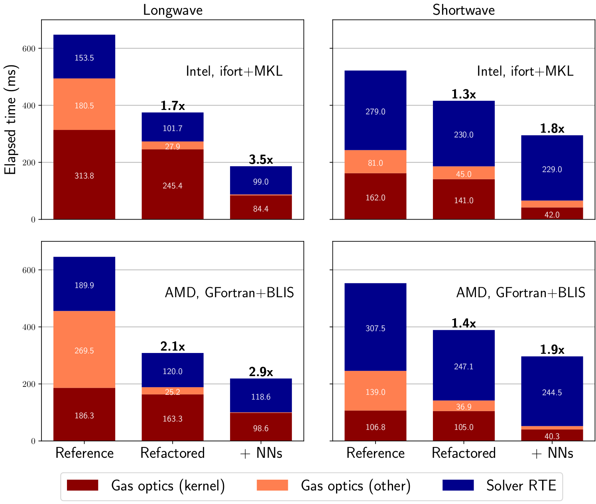
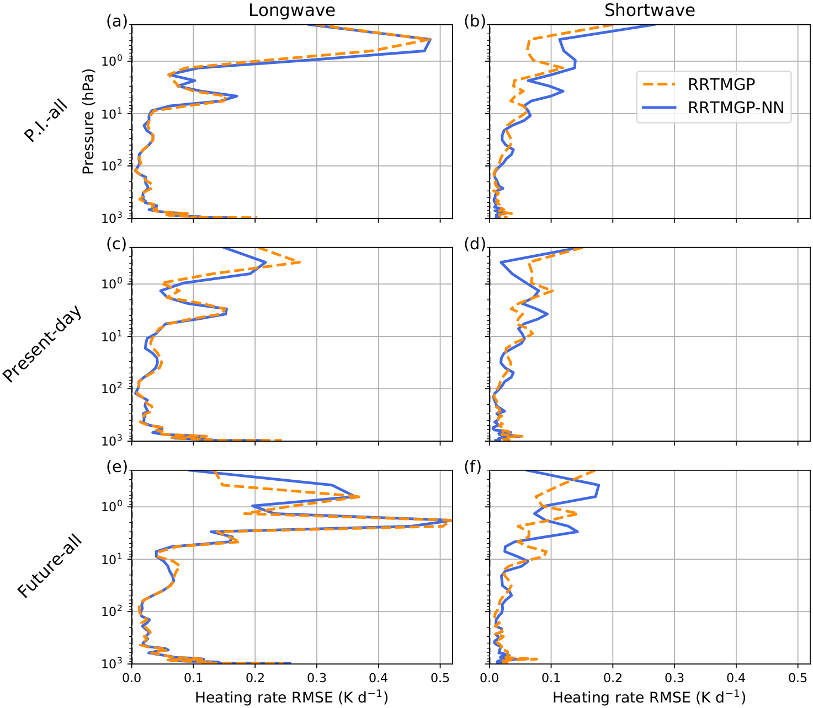

RTE+RRTMGP-NN nn_dev
RTE+RRTMGP-NN is an accelerated version of RTE+RRTMGP using neural networks for the gas optics, and a refactored radiative transfer solver
Recent changes
May 2021: Cloud extension and all-sky example now working! Furthermore, cleanup of RTE - no longer separate functions for "broadline fluxes only", instead a logical is passed to indicate whether only broadband fluxes are needed. Some further GPU optimizations for RTE kernels.
January 2021: Use of two source functions (one for layers and one for levels) instead of three (one for layers and two for levels) like in RRTMGP. This had no significant accuracy loss and is faster. RRTMGP(-NN) also now computes the full spectral source functions instead of band-wise sources and finishing the computations in RTE (this was about as fast as the current source implementation, but clunky)
December 2020: A paper on RTE-RRTMGP-NN has been published in JAMES.
September 2020: GPU code fully working again, fixes to gas optics code to support OpenMP from an outer loop (see rrtmgp_rfmip_lw.F90)
August 2020: Shortwave NN models added. Similar performance increase and accuracy as longwave model. Cleaner RRTMGP code: now only one interface which takes NN models as optional input to enable NN kernel. OpenACC code not tested and probably broken again.
July 2020: The neural networks now predict molecular absorption from which the optical depth is retrieved by multiplying with the dry air column amount Ndry. This does not change accuracy but makes the model robust to changes in vertical resolution since Ndry is no longer an input.
June 2020: RTE+RRTMGP-NN is now fully usable for the long-wave and a paper has been submitted to JAMES. Besides accelerating the long-wave gas optics computations (RRTMGP) by a factor of 2-4 by using neural networks, the solver (RTE) has been refactored to use g-points in the first dimension to be consistent with RRTMGP. This and other optimizations (e.g. Planck sources by g-point are now computed in-place in the solver) can make the solver 80% faster. When NN are additionally switched on, computing clear-sky longwave fluxes is up to 3 times faster. These results are for intel compilers and MKL - expect smaller speed-ups on other platforms and other BLAS libraries.
How it works: Instead of the original lookup-table interpolation routine and "eta" parameter to handle the overlapping absorption of gases in a given band, this fork implements neural networks (NNs) to predict optical properties for given atmospheric conditions and gas concentrations, which includes all minor longwave (LW) gases supported by RRTMGP. The NNs predict molecular absorption (LW/SW), scattering (SW) or emission (LW) for all spectral points from an input vector consisting of temperature, pressure and gas concentrations of an atmospheric layer. The models have been trained on 6-7 million samples (LW) spanning a wide range of conditions (pre-industrial, present-day, future...) so that they may be used for both weather and climate applications.
Speed: The optical depth kernel alone is 1-6 times faster while the computation of clear-sky fluxes using NNs and refactored code is 2-3 times faster. This is when all gases are included, which in the longwave results in a NN with 18 inputs in total. Expect large speedups with a fast BLAS library such as MKL and when comparing against a full computation (minor gases are expensive in the original code, "for free" with NNs"), otherwise smaller. The NN implementation uses BLAS where the input data is packed into a (ngas * (ncol * nlay)) matrix which is then fed to GEMM call to predict a block of data at a time.
Clear-sky timings:

Accuracy: The errors in fluxes and heating rates are very similar to the original scheme in evaluation using RFMIP (below) and GCM profiles, as well as the CKDMIP evaluation.

Building the libraries + clear-sky example
The code should work very similarly to the end-user as the original, but a BLAS library is required. The neural network models reside in ASCII files and are provided via an optional argument to the RRTMGP interface. For instructions see examples/rfmip-clear-sky.
to-do
- [x] implement neural networks for shortwave
- [x] GPU kernels - should be easy and very fast with openacc_cublas done, but note that host CUDA call overhead (such as CudaFree) was very large for small problem sizes on one tested platform (Kepler). Probably normal behaviour
- [x] "missing gases" -how to handle these? Assume some default concentrations but what? **assumed zero by default, also present-day and pre-industrial scalar concentrations available in table, toggled in gas_optics_rrtmgp.
- [x] offer user choice regarding speed/accuracy? (simpler, faster models which are less accurate) tested, but as described in paper, the minor gases can be accounted for with negligible cost with NNs. The currently implemented models support CKDMIP-style gases with CFC11-eq)
- [x] fix cloud optics extension
- [ ] post-processing (scaling) coefficients should perhaps be integrated into neural-fortran and loaded from the same files as the model weights
original RTE+RRTMGP
This is the repository for RTE+RRTMGP, a set of codes for computing radiative fluxes in planetary atmospheres. RTE+RRTMGP is described in a paper in Journal of Advances in Modeling Earth Systems.
RRTMGP uses a k-distribution to provide an optical description (absorption and possibly Rayleigh optical depth) of the gaseous atmosphere, along with the relevant source functions, on a pre-determined spectral grid given temperatures, pressures, and gas concentration. The k-distribution currently distributed with this package is applicable to the Earth's atmosphere under present-day, pre-industrial, and 4xCO2 conditions.
RTE computes fluxes given spectrally-resolved optical descriptions and source functions. The fluxes are normally summarized or reduced via a user extensible class.
Example programs and documentation are evolving - please see examples/ in the repo and Wiki on the project's Github page. Suggestions are welcome. Meanwhile for questions please contact Robert Pincus and Eli Mlawer at rrtmgp@aer.com.
Recent changes
- The default method for solution for longwave problems that include scattering has been changed from 2-stream methods to a re-scaled and refined no-scattering calculation following Tang et al. 2018.
- In RRTMGP gas optics, the spectrally-resolved solar source function in can be adjusted by specifying the total solar irradiance (
gas_optics%set_tsi(tsi)) and/or the facular and sunspot indicies (gas_optics%set_solar_variability(mg_index, sb_index, tsi))from the NRLSSI2 model of solar variability. rte_lw()now includes optional arguments for computing the Jacobian (derivative) of broadband flux with respect to changes in surface temperature. In calculations neglecting scattering only the Jacobian of upwelling flux is computed. When using re-scaling to account for scattering the Jacobians of both up- and downwelling flux are computed.- A new module,
mo_rte_config, contains two logical variables that indicate whether arguments to routines are to be checked for correct extents and/or valid values. These variables can be changed via calls torte_config_checks(). Setting the values to.false.removes the checks. Invalid values may cause incorrect results, crashes, or other mayhem
Relative to commit 69d36c9 to master on Apr 20, 2020, the required arguments to both the longwave and shortwave versions of ty_gas_optics_rrtmgp%load()have changed.
Building the libraries.
cd build- Set environment variables
FC(the Fortran 2003 compiler) andFCFLAGS(compiler flags). Alternately create a Makefile.conf that sets these variables. You could also link to an existing file. - Set environment variable
RTE_KERNELStoopenaccif you want the OpenACC kernels rather than the default. make
Examples
Two examples are provided, one for clear skies and one including clouds. See the README file and codes in each directory for further information.